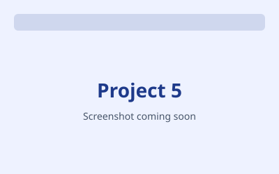

Featured Projects
Organization Innovation Platform
React · Spring Boot · MySQL · n8n

Full-stack hackathon submission-and-evaluation portal with a hybrid AI + human evaluation flow that merges LLM scores and invigilator scores into one result.
View on GitHub
ML-Based Intrusion Detection System
Python · XGBoost · CICIDS2017

DRDO research. Supervised ML pipeline for network-anomaly detection; tuned XGBoost reached 99.9% accuracy (ROC-AUC 0.999); caught data leakage and reframed it as an ablation study.
View on GitHub
NourishIQ — AI Clinical Nutrition Platform
Node.js · Groq LLaMA vision · Supabase · Cloud Run

Reads a blood-report photo and returns India-specific dietary guidance; response caching and offline fallback.
View on GitHub
RepoScan AI — Multi-Agent Repository Analyzer
FastAPI · Groq · React

Audits any GitHub repo across six areas and outputs a health score with prioritized fixes and exportable reports.
View on GitHub
Udaan AI — Opportunity Intelligence Platform
FastAPI · Groq · Telegram · React

Matches users to government schemes, scholarships and jobs they qualify for, with trust-scoring for official sources and Telegram deadline alerts. Consolation Prize, WinnovX 2026.
View on GitHub